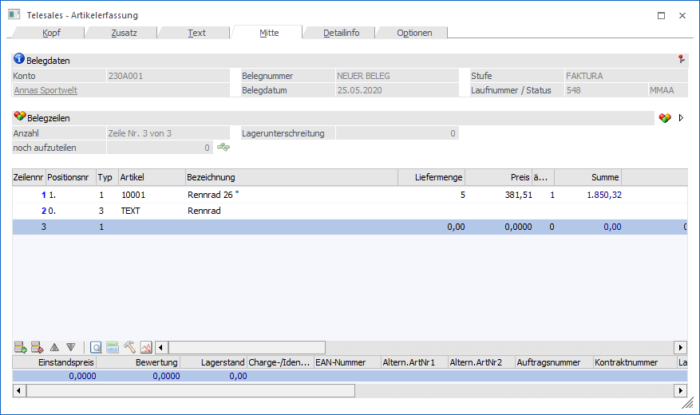
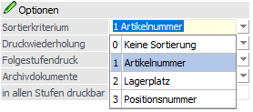
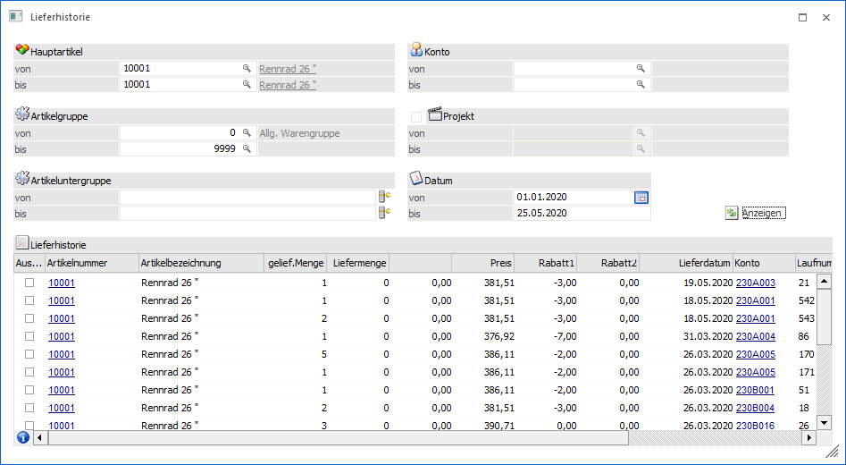

Im Belegmittelteil werden die Belegzeilen erfasst. Belegzeilen können sein:
ü Artikel
ü Texte
ü Makros (diese werden im Programmpunkt Stammdaten/Makro hinterlegt)
ü Zwischensummen
ü Summen
ü Gutschriften
ü Leerzeile
ü Seitenumbruch
Die oben genannten Typen werden durch Eingabe des Kennzeichens am Beginn der Eingabezeile definiert.

Belegdaten

Ø Konto
An dieser Stelle wird die Nummer des Hauptkontos (WinLine START - Parameter - FAKT-Parameter - Belege - Allgemein - Option "Hauptkonto für Belege") des aktuellen Belegs angezeigt.
Ø Name
An dieser Stelle wird der Kontoname der Kontonummer dargestellt und das Fenster Kontoinformation kann direkt geöffnet werden.
Ø Belegnummer
An dieser Stelle wird die Belegnummer des Belegs angezeigt.
Ø Belegdatum
Hier wird das Belegdatum des Belegs dargestellt.
Ø Stufe
An dieser Stelle wird die Belegstufe des Belegs angezeigt. Wird ein Beleg in eine nachfolgende Belegstufe gewandelt, so wird hier die "Zielbelegstufe" dargestellt, die Laufnummer stammt hingegen noch vom "Ausgangsbeleg".
Ø Laufnummer/Status
Hier wird die Laufnummer, sowie der Staus des Beleges und dessen Folgestufen angezeigt.
Belegzeilen

Ø Anzahl
An dieser Stelle wird die Gesamtanzahl der Belegzeilen aufgeführt und angegeben, in welcher Zeile sich befunden wird.
Ø noch aufzuteilen
An dieser Stelle wird die Anzahl der noch nicht ausgeprägten Hauptartikel, welche als "Hauptartikel mit Ausprägung" definiert wurden, angezeigt.
Ø  zum nächsten aufzuteilenden Artikel
wechseln
zum nächsten aufzuteilenden Artikel
wechseln
Bei Anwahl dieses Buttons wird zum nächsten Artikel des Typs "Hauptartikelartikel mit Ausprägungen" gewechselt, bei dem ein (weiteres) Ausprägen möglich und laut Aufteilungsoptionen auch erlaubt wäre.
Ø Lagerstandsunterschreitung
An dieser Stelle wird die Anzahl all jener Belegzeilen aufgeführt, welche den Lagerstand unterschreiten.
Ø  verfügbarer Lagerstand
verfügbarer Lagerstand
In der Beleg Mitte kann die Spalte "verfügbare Menge" eingeblendet werden. Dort wird zunächst der Lagerstand angezeigt. Beim Betätigen des Buttons wird die Spalte "verfügbare Menge" zum dem Erfassten Lieferdatum neu berechnet. Beim Telesales wird ein Timer für die Aktualisierung des Lagerstands verwendet aufgrund der Berechnung kann erst im Telesales nach kurzer Zeit der Erfassung des Artikels die Berechnung erfolgen oder die Zeile wird einmal verlasen und der Fokus erneut auf die Artikelzeile gesetzt.
Hinweis - Artikel mit Lagerorten
Beim Verwenden des Lagermanagements und Lagerorten, die bei der verfügbaren Mengen nicht berücksichtigt werden sollen, muss in der Belegart bei der verfügbaren Menge die Option 3 (erlaubt mit Warnung (inkl. Lagerorte) oder 4 (nicht erlaubt (inkl. Lagerorte)) hinterlegt sein.
Ø Gutscheinbetrag
Sobald ein Gutschein in den Beleg übernommen wurde, wird die Information "Gutscheinbetrag" eingeblendet. Hier wird der Betrag aller übernommenen Gutschein angezeigt, wobei dieser Betrag in der weiteren Folge vom Zahlungsbetrag abgezogen wird und nicht vom Gesamtbetrag des Belegs.
Ø Gesamtnettobetrag / Gesamtbruttobetrag
Durch Aktivierung der Option "Gesamtbetrag" (Register "Optionen") werden die mitlaufenden Informationsfelder "Gesamtnettobetrag" und "Gesamtbruttobetrag" angezeigt.
Ø  Artikel aus einer Merkliste einfügen
Artikel aus einer Merkliste einfügen
Bei Anwahl dieses Buttons wird das Fenster "Merkliste - Matchcode" geöffnet, aus welchem eine Merkliste gewählt werden kann. Dadurch werden alle Artikel der gewählten Merkliste in die Belegerfassung übernommen.
Ø  alle Ausprägungen ein- bzw. ausblenden
alle Ausprägungen ein- bzw. ausblenden
Durch Anwahl dieses Buttons werden alle im Beleg befindlichen Ausprägungen ein- bzw. ausgeblendet.
Folgende Felder können bearbeitet werden:
Ø Artikelnummer
Selektieren Sie eine Artikelnummer oder Makronummer mit Hilfe des Matchcodes oder tragen Sie die Nummer direkt ein, wenn diese bekannt ist.
Ø Artikelbezeichnung
Die Artikelbezeichnung wird automatisch angezeigt und kann überarbeitet werden. Durch Drücken der F9-Taste oder Anklicken der Lupe kann zusätzlicher Text bei der Bezeichnung eingegeben werden.
Wurde als Zeilentyp Text gewählt, können Sie dieselbe Funktion nützen, um in einer Zeile bis zu 2000 Zeichen einzugeben.
Ø Liefermenge
Geben Sie die zu liefernde Menge ein.
Ø Bestellmenge
Dieses Feld wird automatisch mit dem Wert aus der Liefermenge vorbelegt. Sollte die zu liefernde Menge nicht der Bestellmenge entsprechen, so kann der Wert der Bestellmenge verändert werden. Dieses Feld steht nur zur Verfügung, wenn ein Lieferschein eingegeben wird.
Ø Noch zu liefernde Menge
Dieser Wert kann nicht editiert werden und errechnet sich aus der Bestellmenge abzüglich der Liefermenge. Dieses Feld wird nur angezeigt, wenn ein Lieferschein eingegeben wird.
Ø Preis
Voraussetzung, dass ein Preis vorgeschlagen wird ist, dass eine der Preislisten, die beim Artikel hinterlegt sind, mit der des Personenkontos übereinstimmt. Der Preis wird vorgeschlagen und kann geändert werden. Durch Drücken der F9-Taste kann nach allen beim Artikel hinterlegten Preisen gesucht werden.
Ausnahme:
Es ist eine Kundenspez. Preisliste, Lieferantenspez. Preisliste, ein Kundengruppenpreis oder Lieferantengruppenpreis ohne Gruppennummer oder Kundennummer bzw. Lieferantennummer beim Artikel hinterlegt. In diesem Fall wird der Preis mit Null vorbelegt. Durch Drücken der F9-Taste im Feld "Preis" kommen Sie in das Preislisteninformationsfenster. In diesem Fenster kann dann einer der hinterlegten Preise ausgewählt werden.
Ø PC
Provisionscode für die Vertreterabrechnung
Ø Rabatt1%/Rabatt2%
Eingabe des Zeilenrabatts
Ø Colli
Ø USt-Zeile
Ø Erlöskonto
Das Erlöskonto aus dem Artikelstamm kann übersteuert werden.
Ø Liefertage/Lieferdatum/Woche/Jahr
Ø Pos. (Positionsebene)
Ø Projektnummer
Hier kann für Artikel eine Zuordnung zu (Service-)Projekten durchgeführt werden.
Ø KSt./KTr.
Ø Statistik
In jeder einzelnen Artikelzeile kann die Einstellung für die Statistik manuell verändert werden. Folgende Möglichkeiten stehen hier zur Verfügung:
ü lt. Artikelstamm: damit wird das Statistikkennzeichen lt. Artikelstamm verwendet
ü keine Statistik: In diesem Fall wird die Statistik nicht geschrieben, egal welche Einstellung im Artikelstamm vorgenommen wurde
ü Statistik: die Artikelzeile wird vollständig in die Verkaufsstatistik aufgenommen (Detailinformation)
ü nur Summen: Zeilen mit diesem Statistiktyp werden zu Artikelgruppenwerten verdichtet (komprimierte Verkaufsinformation)
ü nicht für Sollbestand: diese Möglichkeit steht nur für jene Artikel zur Verfügung, die im Artikelstamm als Sollbestand einen Wert 1-12 (letzte x Verkäufe) hinterlegt haben. Wird dieser Eintrag gewählt, so wird die Statistik lt. Artikelstamm geschrieben. Die Statistikzeile enthält jedoch ein eigenes Kennzeichen, dass diese nicht in der Sollbestandsberechnung beim Bestellvorschlag berücksichtigt werden soll.
Diese Spalte "Statistik" wird standardmäßig nicht angezeigt, sondern muss im Kontextmenü über "Spalten anzeigen/verstecken" eingeblendet werden.
Ø Faktor1 - Faktor3 (bzw. Bezeichnungen lt. Einstellung in den Belegoptionen)
In diesen Spalten werden die Werte der 3 möglichen Faktoren angezeigt. Diese können mittels Formeln befüllt bzw. manuell eingetragen und auch verändert werden.
Ø Artikelgewicht
Diese Spalte wird standardmäßig mit dem Gewicht aus dem Artikelstamm befüllt, welches editiert oder über eine Zeilenformel ggf. vorbelegt werden. Dazu muss die Variable 0,188 verwendet werden und mit Nachkommastellen angegeben werden. Als Komma muss ein Punkt verwendet werden.
Die Spalten "Projektnummer", Artikelgewicht sowie "Faktoren" werden standardmäßig nicht angezeigt, können aber mittels der rechten Maustaste und "Spalten anzeigen/verstecken" aktiviert werden.
Ø Vertreter
Eingabe des Vertreters für die Provisionsabrechnung. Dieses Feld wird automatisch befüllt, wenn im Register "Zusatz" der Vertreter angegeben wird, bzw. bei Änderung dieser Angabe der "Pfeil"-Button daneben gedrückt wird (damit wird der geänderte Vertreter in die Belegmittelteilszeile kopiert). Wird lt. Belegart eine Vertretervorlage verwendet, so wird dieses Feld lt. Vertretervorlage befüllt (siehe dazu auch das Kapitel "Vertretervorlagen".
Ø Positionstext (100stellig)
Ø Ersatzartikelnummer/Ersatzartikelbezeichnung
Hier wird die kunden- bzw. lieferantenspez. Artikelnummer - und bezeichnung aus der Preisliste angezeigt; und kann nochmals editiert werden.
Ø Bestätigtes Lieferdatum
Dieses Feld steht zur Eingabe eines weiteren Datums (zusätzlich zum Lieferdatum) zur Verfügung. In den Belegoptionen kann die Spaltenüberschrift für dieses Datumsfeld definiert werden. In weiterer Folge kann dieser Wert z.B. im Backlog oder in der Lieferantenmahnung ausgewertet werden.
Hinweis:
Dieses Datum wird beim Kopieren von Belegen gelöscht.
Das Datum steht in den Batchbelegvorlagen zum Im- bzw. Export zur Verfügung.
Ø Teilliefersperre
Dieses Kennzeichen unterbindet die Möglichkeit, beim Lieferschein Teillieferungen für eine Artikelzeile durchzuführen. Diese Einstellung wird aus dem Belegkopf übernommen, kann aber pro Zeile übersteuert werden.
Hinweis
Im Belegerfassen kann die Verpackungsart (Spalten VP1, VP2, VP3) nicht mehr editiert werden, sobald Kommissionierungen vorhanden sind, unabhängig davon ob für den Auftrag bereits eine Packliste im Originaldruck gedruckt wurde oder nicht.
Achtung
Wenn die Erfassungszeile verlassen wird, wird der Lagerstand sofort um die eingegebene Menge reduziert.
Buttons
Ø OK
Durch Drücken der F5-Taste kann der Beleg gespeichert, gerechnet und/oder gedruckt werden.
Ø ENDE
Durch Drücken der ESC-Taste wird das Fenster geschlossen. Der Beleg wird optional gespeichert.
Ø Einfügen/Entfernen
Durch Anwahl dieser Buttons können einzelne Belegzeilen gelöscht oder neue eingefügt werden
Ø Vorschau
Durch Anklicken des Vorschau-Buttons kann der Beleg in einer Übersicht angesehen werden.
Ø Sortieren
Durch Anklicken des Sortieren-Buttons können alle Artikelzeilen nach der Artikelnummer oder nach dem Lagerort sortiert werden. Voraussetzung dafür ist, dass in der Belegart ein Sortierkriterium definiert wurde.

Achtung
Wird ein Beleg sortiert, gehen alle Textzeilen und Zwischensummen verloren, da im Beleg keine Verbindung zwischen den Textzeilen und er Artikelzeile besteht - daher kann das Programm nicht wissen, welche Texte zu welchem Artikel gehören.
Ø Lieferhistorie
Durch Anklicken dieses Buttons bekommen Sie die bisher erfolgten Lieferungen für den aktuell angewählten Kunden angezeigt. Basis dafür sind alle bisherigen Lieferscheine bzw. Fakturen, die an diesen Kunden ausgestellt worden sind:

Selbstverständlich können Sie die Anzeige auch noch detaillierter eingrenzen - z.B. auf eine bestimmte Artikelgruppe, Artikelnummer, Artikeluntergruppe oder einen bestimmten Datumsbereich, der für Ihre Information relevant ist.
Neben der Anzeige der Artikelnummer, dem damaligen Preis, Rabatt, dem Lieferdatum und der Laufnummer des Beleges wird vor allem aber auch die Menge angezeigt (gelief. Menge), die damals geliefert wurde.
In der Spalte "Liefermenge" können Sie die Menge eingeben, die Sie DIESMAL liefern möchten.
Sobald Sie die OK-Taste bestätigen, werden alle Artikelzeilen, bei denen entweder in der Spalte "Liefermenge" ein Wert steht oder die Checkbox in der Spalte "Auswahl" gesetzt ist, automatisch in den aktuellen Beleg übernommen.
Damit steht Ihnen eine sehr komfortable Möglichkeit zu Verfügung, zu überblicken, was dieser Kunde die letzten Male (wie viele Belege Sie zurück gehen möchten, stellen Sie im Feld "letzte x Lieferungen" ein) von Ihnen gekauft/geliefert bekommen - hat - und diese Information zu nützen, um dem Kunden ein entsprechendes Angebot für die aktuelle Lieferung machen zu können (Menge und Preis steht ja zur Verfügung).
Durch Drücken der Taste "Beleginfo" wird der Beleg, mit dem die Artikel damals ausgeliefert wurden, nochmals am Schirm angezeigt.
Wenn Sie Selektionskriterien verändert haben, drücken Sie bitte den Button "Anzeigen", damit die Selektion ausgeführt wird und die gewünschten Artikel in der Bearbeitungstabelle angezeigt werden.
Diese Funktion ist vor allem im Telefonverkauf interessant, wo aktuelle und vor allem schnelle Information Voraussetzung für einen erfolgreichen Verkauf ist. Sehen Sie dazu auch Kapitel "Telefonverkauf".
Ø Hauptartikel ohne Auswahl immer aufteilen
Wurde im Auftrag ein Ausprägungsartikel erfasst und noch nicht aufgeteilt, kann durch Drücken dieses Buttons die Aufteilung automatisch erfolgen. Nach welchen Kriterien die Aufteilung erfolgen soll wird in den Fakt-Parametern definiert.
Falls einer oder mehrere Hauptartikel nicht vollständig aufgeteilt werden können, da z.B. nicht genug Chargen mit Lagerstand vorhanden sind, wird eine Meldung ausgegeben und alle Hauptartikelzeilen, bei denen eine Teillieferung durchgeführt wurde, werden mit einem Infosymbol markiert.
Ø Immer ausprägen
Durch die Funktion "immer ausprägen" in der Belegmitte wird die Vorbelegung der Ausprägungen im Register "Zusatz" außer Kraft gesetzt. D.h. ist die Option "immer ausprägen" aktiviert, so wird das Aufteilungsfenster immer geöffnet.
Ø Suchen
Durch Anklicken des Suchen - Buttons kann innerhalb des aufgerufenen Beleges nach einer Artikelnummer, nach einer Zeilennummer oder nach einer Positionsnummer gesucht werden.
Ø Statistik
Durch Anklicken des Statistik-Buttons erhalten Sie eine Übersicht über die Verkaufszahlen der letzten 3 Jahre. Diese Übersicht kann auch in detaillierter Form ausgegeben werden.
Ø Artikel aus Merkliste einfügen
Wenn dieser Button angeklickt wird, dann wird das Fenster Merkliste-Matchcode geöffnet. Daraus kann dann eine Merkliste ausgewählt werden, wodurch alle Artikel der Merkliste mit ihrem aktuellen Lagerstand in die Belegerfassung übernommen werden.
Was kann noch alles gemacht werden?
Ø Weitere Informationen
Wird ein Artikel erfasst, werden in der zweiten Tabelle der aktuelle Lagerstand, der Einstandspreis und sonstige Daten des Artikels angezeigt. Diese Informationen können bei der Belegerfassung sehr wichtig sein.